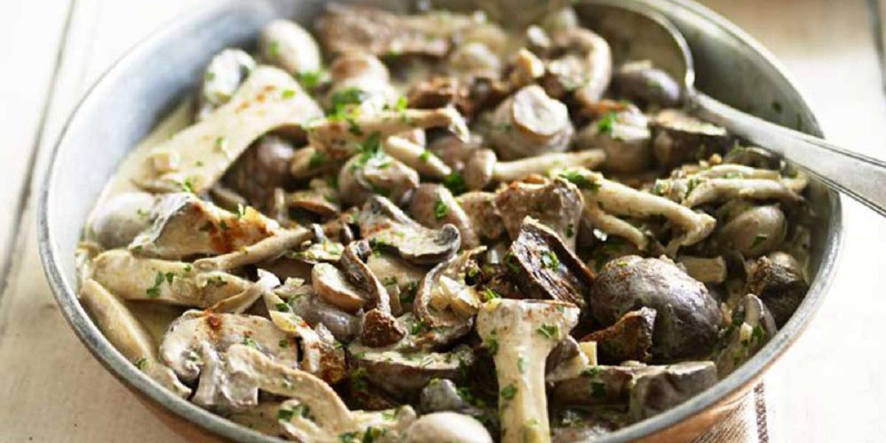

Mushroom Stroganoff
Recipe Specification
Ingredients List
| Ingredients | Quantity |
|---|---|
| Butter | 30g |
| White Onion | 1x1 |
| Chestnut Mushroom | 1kg |
| Dijon Mustard | 15g |
| Beef Stock | 400ml |
| Vegetable Oil | 15ml |
| Créme Fraiche | 60g |
| Lemon | 1x1 |
| Parsley | 30g |
| Salt & Pepper | To Taste |
Yield: 4-6 portions
Preparation
- Peel and finely dice white onion.
- Cut mushrooms in quarters.
- Zest and juice lemons.
- Pick and finely chop parsley.
Cooking Instructions
- Place a large frying pan over a medium/high heat and add half the vegetable oil.
- Add sliced onions to same pan and fry for 2-3 minutes.
- Add mushrooms and cook for 3-4 minutes.
- Mix in Dijon mustard and mix before adding beef stock.
- Bring to the boil and reduce to the simmer for 15-20 minutes until liquid reduced by half.
- Add créme fraiche before cooking for a further 4-5 minutes.
- Add lemon zest and juice along with chopped parsley before seasoning with salt and pepper.

Serving Suggestions
Serve mushroom stroganoff with creamy mash or steamed rice.
Storing instructions
Allow to cool to room temperature. Consume within 4 days of making. Store in the fridge
Reheating Instructions
Place in the microwave for 2-3 minutes.